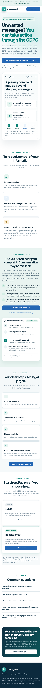
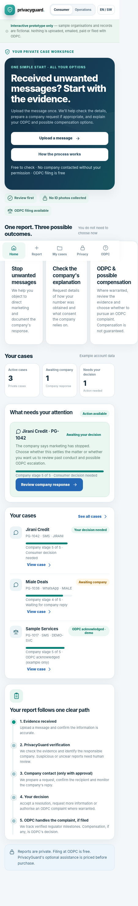
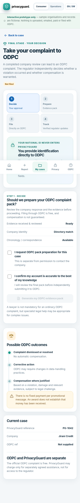
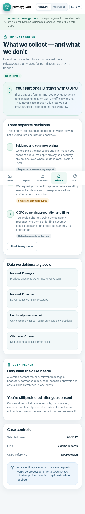
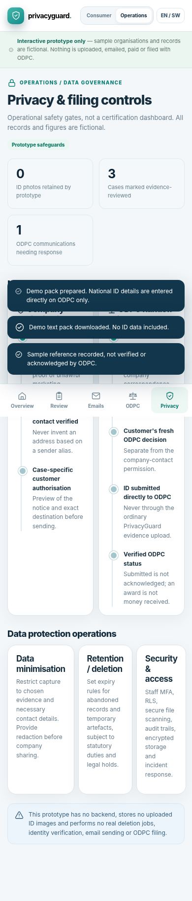
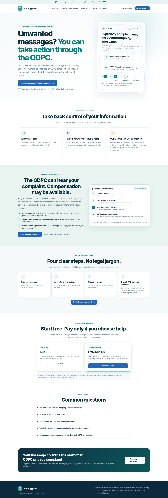
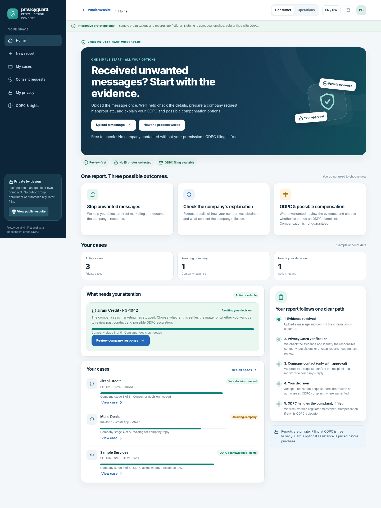
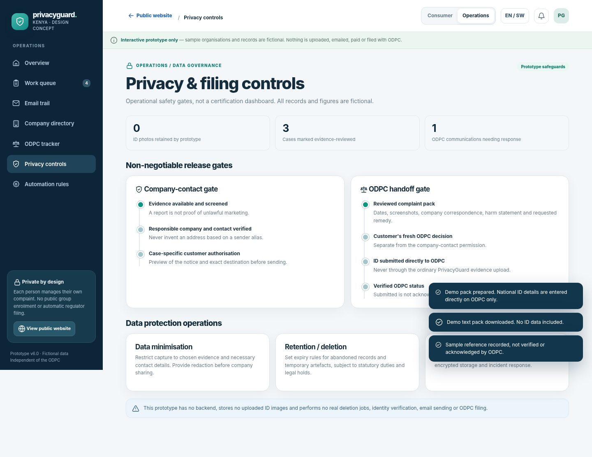
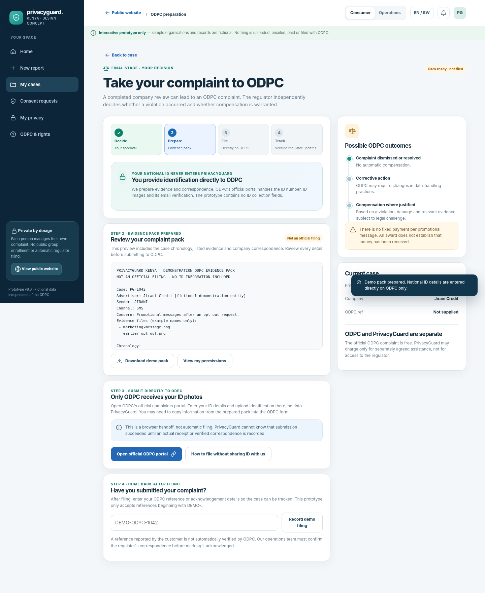

01 / v6 baseline
Landing — mobile
ODPC and possible compensation visible; report-first CTA; trust and optional service fees.
Open clickable prototype ↗Design baseline v6 · Evidence first · Company review · Consumer choice · ODPC pack and ID-free handoff. Review this before authorising code. The live product is not yet built; all examples are fictional and no real data, letters or payments are transmitted.
Launch clickable HTML prototype →Read Astra audit prompt
ODPC and possible compensation visible; report-first CTA; trust and optional service fees.
Open clickable prototype ↗
One entry point, case summary and next action.
Open clickable prototype ↗
Customer can choose to escalate; authorization must be case-specific.
Open clickable prototype ↗
Pack preview, official portal link, ID goes to ODPC and not PrivacyGuard.
Open clickable prototype ↗
Purpose-specific permissions and data minimisation.
Open clickable prototype ↗
Pipeline, tasks and aggregate progress.
Open clickable prototype ↗
Responsive marketing layout and ODPC education.
Open clickable prototype ↗
Case milestones, report CTA, status clarity.
Open clickable prototype ↗
Case triage, communications and priorities.
Open clickable prototype ↗
Filing steps, official identity boundary and case reference.
Open clickable prototype ↗